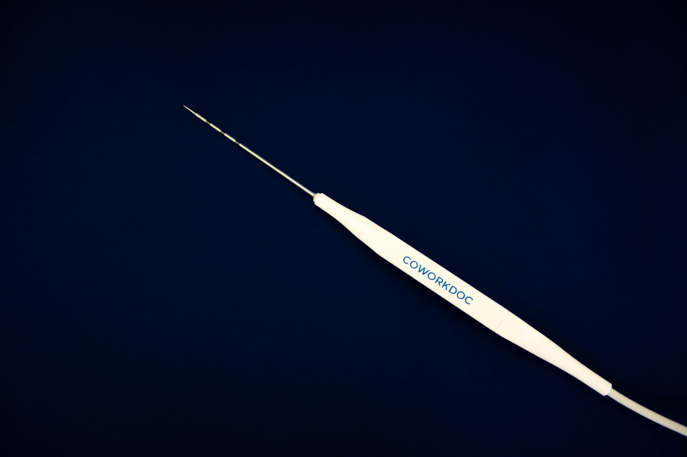
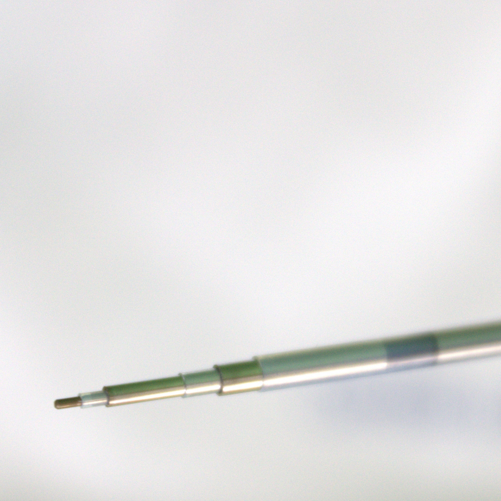
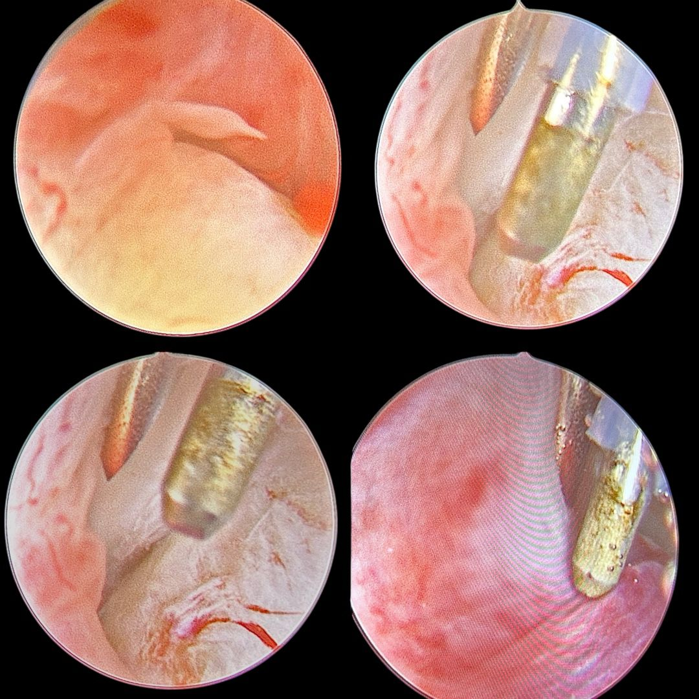

Dispositivos diseñados específicamente para la artroscopia de la articulación temporomandibular. Desarrollados bajo el asesoramiento de destacados cirujanos maxilofaciales.
Demostraciones quirúrgicas
Haga clic en cualquier video para ver demostraciones quirúrgicas completas. Contenido exclusivo para profesionales de la salud cualificados.
rf-max
Artroscopia ATM
Procedimiento de artroscopia de la ATM demostrando la sonda rf-max en la cavidad articular. 1.8mm de diámetro, punta roma — navegando el espacio temporomandibular reducido.
rf-max
Inserción de la sonda y acceso articular
Demostración quirúrgica próximamente.
rf-max
Video de procedimiento adicional
Más contenido de demostración quirúrgica próximamente.
El instrumento
Sonda de radiofrecuencia de plasma bipolar diseñada específicamente para la articulación temporomandibular
Antes del RF-MAX, los cirujanos maxilofaciales debían recurrir a sondas empleadas en otras especialidades, como las que se usan en la ablación de los cornetes nasales por parte de los otorrinos. El usar un dispositivo que no está diseñado para este fin conlleva diversos riesgos: perforaciones de la articulación y desgarro accidental del tejido sano, quemaduras indeseadas por energización accidental del trocar metálico o puerto de inserción.
En Coworkdoc desarrollamos una sonda de radiofrecuencia específica para este procedimiento. Con un diámetro de 1.8mm y una longitud de trabajo de 9cm, el rf-max se desplaza por el espacio reducido de la ATM. Gracias a una punta roma y atraumática que reduce el riesgo de perforación y desgarro tisular. Solo lleva energizados dos polos, evitando el contacto con el trocar de metal. La punta activa tiene un largo de 1.5mm, favoreciendo el corte y coagulación.
Diámetro
1.8 mm
Longitud de trabajo
9 cm
Diseño de punta
Roma, atraumática
Angulación
Recta
Tipo de energía
Plasma RF bipolar
Esterilización
ETO
Indicación
Artroscopia ATM
Certificación
ISO 13485


Indicación quirúrgica
El rf-max está diseñado específicamente para la cirugía de la articulación temporomandibular. A diferencia de los dispositivos adaptados de otros procedimientos, se diseñó desde cero basándose en las recomendaciones directas de destacados cirujanos maxilofaciales. El resultado es una sonda única en el mercado, que permite cortes precisos, una coagulación fiable y un manejo adecuado de los tejidos dentro de la cavidad articular.
La sonda consta de tres componentes metálicos separados por plástico PTFE. El tubo metálico exterior no tiene carga eléctrica, lo que evita la transmisión accidental de energía a la vaina de acceso. Los electrodos central y de punta son los elementos activos emisores de energía. El electrodo de punta mide 1.5mm de longitud, lo que proporciona al cirujano una mayor operatividad dentro del espacio articular. Además, su punta es roma, una característica específica para la cirugía de la ATM que reduce el riesgo de perforación y desgarro de tejido.

Por qué CoworkDoc
Cada instrumento CoworkDoc comienza con un cirujano describiendo una necesidad no satisfecha. Escuchamos, interpretamos e ingeniamos soluciones que no existen en ningún otro lugar del mercado.
Co-desarrollado con cirujanos
El rf-max fue desarrollado junto a cirujanos maxilofaciales que identificaron limitaciones específicas de los instrumentos ATM existentes. Sus requerimientos clínicos guiaron cada decisión de diseño.
Certificado ISO 13485
Fabricado en una instalación certificada ISO 13485 y registrada ante la FDA en Costa Rica. La misma zona industrial que las principales empresas multinacionales de dispositivos médicos.
Distribuidores de todo el mundo
Distribuidos en el mundo por Matching Deals — un equipo comercial multilingüe que gestiona la cadena de suministro y la disponibilidad regional de todos los productos CoworkDoc.
Contáctenos para obtener información sobre productos, precios y disponibilidad en su región. Le responderemos en un plazo de 1 día hábil.
Más especialidades
Otorrinolaringología
Turbilon, rf-hook y Bisuctor — tres instrumentos para cirugía nasal, base de cráneo, cirugía de sueño y laringe.
Ver productos ORLORL — Oído
Instrumentos para otología actualmente en desarrollo.
PróximamenteORL — Garganta
Instrumentos para laringología actualmente en desarrollo.
Próximamente¿Le interesa utilizar este producto en su práctica?